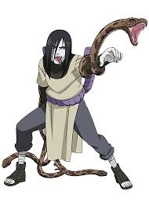

Orochimaru adalah karakter fiksi pria dari anime dan manga Naruto yang namanya diadaptasi dari literatur kuno Jepang, Jiraiya Goketsu Monogatari. Karakter yang memiliki suara seperti perempuan demi memberi kesan kejam (serupa dengan tokoh Frieza di Dragon Ball Z) ini, sempat menggunakan tubuh ninja wanita di awal serial dan pernah menyamar menggunakan kimono saat merekrut anggotanya. Dalam bertarung—seperti saat melawan Hokage Ketiga, Jiraiya, Tsunade, hingga Naruto dalam wujud rubah ekor empat—Orochimaru mengandalkan pedang legendaris bernama Kusanagi (yang dalam permainan Naruto: Ultimate Ninja diplesetkan menjadi Grass Halberd). Senjata ini terinspirasi dari mitologi Jepang tentang pedang yang keluar dari ekor ular berkepala delapan setelah makhluk tersebut terbunuh.